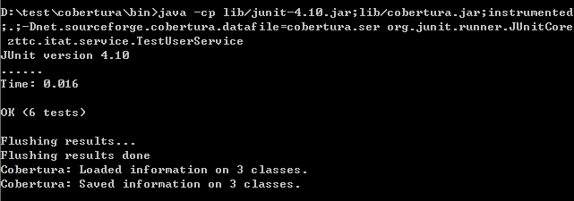

本文主要介绍JUnit的用法和以及相关的单元测试框架的用法。
一、junit的安装和测试原则
1.导入junit的jar，不建议直接使用eclipse中所提供的包
2.在src目录下编写服务代码
3.创建测试类
基本原则：
- 在eclipse中创建一个source folder，命名为test
- 创建一个测试类所在的包，包的名称和要测试的类一致
4.Junit3和Junit4两者的区别是非常明显的
在Junit3中，如果某个类需要是测试类，必须将其继承于TestCase，如果某个方法需要是测试方法，必须让这个方法通过testXXX开头，在junit3中，如果希望指定某个测试方法运行之前运行某个初始化方法，这个方法的名称必须是setUp，如果希望在某个测试方法运行之后运行某个释放资源的方法，这个方法的名称必须是tearDown
在Junit4中，一个POJO类就是测试类，测试方法通过@Test来标识，初始化方法通过@Before，释放资源的方法通过@After来标注。但是为了让junit4中的测试类在junit3中也可以使用，习惯于把初始化方法命名为setUp，释放资源的方法命名为tearDown，测试方法也同样以test开头
5.如何使用断言
在junit4中提供了一个Assert的类，这个类中有大量的方法进行断言的处理，在junit3中由于继承了TestCase,这个TestCase中提供了大量的assert的方法
6.测试异常对象
7.timeout参数
二、hamcrest简介和TestSuite
hamcrest
hamcrest可以有效增加junit的测试能力，用一些相对通俗的语言来进行测试
要使用junit中的assertThat来进行断言
第一个参数表示实际值，第二个参数表示hamcrest的表达式
特别注意：如果使用junit4.10，必须把hamcrest的jar包移到junit的jar之前，否则，组合条件allOf,anyOf都会抛出异常
常用的比较方式
逻辑
allOf - 如果所有匹配器都匹配才匹配, short circuits (很难懂的一个词,意译是短路,感觉不对,就没有翻译)(像 Java &&)
anyOf - 如果任何匹配器匹配就匹配, short circuits (像 Java ||)
not - 如果包装的匹配器不匹配器时匹配,反之亦然
对象
equalTo - 测试对象相等使用Object.equals方法
hasToString - 测试Object.toString方法
instanceOf, isCompatibleType - 测试类型
notNullValue, nullValue - 测试null
sameInstance - 测试对象实例
Beans
hasProperty - 测试JavaBeans属性
集合
array - 测试一个数组元素test an array’s elements against an array of matchers
hasEntry, hasKey, hasValue - 测试一个Map包含一个实体,键或者值
hasItem, hasItems - 测试一个集合包含一个元素
hasItemInArray - 测试一个数组包含一个元素
数字
closeTo - 测试浮点值接近给定的值
greaterThan, greaterThanOrEqualTo, lessThan, lessThanOrEqualTo - 测试次序
文本
equalToIgnoringCase - 测试字符串相等忽略大小写
equalToIgnoringWhiteSpace - 测试字符串忽略空白
containsString, endsWith, startsWith - 测试字符串匹配
testsuite
可以通过TestSuite来组成多个测试组件
三、测试驱动开发
正常的开发流程
编码—>测试—>重复—>提交
基于测试驱动的开发
测试—>编码—>重复—>提交
先写了测试之后，由于测试的覆盖率要求为100%，所以就会让代码中可能存在的分支都进行测试，这样先写测试单元，可以为将来的代码提供一种有效的参考
我们定义一个zttc.itat.service的包，在下面写我们的接口和具体实现：
IUserService：
UserServiceByMap：
|
|
测试类：
TestUserService：
|
|
cobertura的使用
1、将cobertura的路径设置到path中
2、将要测试的源代码，编译之后的字节码文件和所需要的jar包拷贝到一个单独的目录中做处理
3、在命令提示符中使用命令为要生成测试覆盖率报告的代码生成一个ser的文件
3.1、 生成cobertura.ser文件
cobertura-instrument –destination instrumented org/konghao/manager/
4、基于ser文件运行测试
4.1、java -cp lib/junit-4.10.jar;lib/cobertura.jar;instrumented;.;-Dnet.sourceforge.cobertura.datafile=cobertura.ser org.junit.runner.JUnitCore org.konghao.manager.TestUserManager

5、根据ser文件生成测试覆盖率的报告
特别注意：如果文件的编码是utf-8的，在生成报告前需要为cobertura-report.bat文件增加DfileEncoding的处理
cobertura-report –format html –datafile cobertura.ser –destination reports src
四、stub和mock
stub原理代码：
UserStubDao：
UserService：
测试类：
TestUserService：
dbunit
dbunit用来隔离数据库的访问
环境搭建
1、导入jar包
dbunit.jar
slf4j.jar
2、创建dbunit的测试数据xml文件
3、创建dbunit的Connection
dbunit的Connection是用来对数据文件进行操作的，这个Connection必须依赖于目前项目中所使用的Connection
4、创建IDataSet，通过DATASet来获取测试数据中的数据
5、初始化数据并且完成测试
还原数据库
1、备份
以上演示的是备份数据库的所有文件
备份某些特定的表
2、还原数据库
easymock
mock对象用来对一些未实现关联对象的类进行测试的对象
- mock和stub的区别
- mock关注的是交互
- stub关注的是状态
EasyMock就是实现Mock对象的框架
运行环境
1、导入easymock的jar包
2、Mock对象的生命周期
三个阶段：record，replay,verify
Mock的关注点是在交互上，主要解决的问题是对象之间的交互，诸如:Service就依赖于DAO，如果DAO没有实现，我们可以通过Mock来模拟DAO的实现。
record阶段就是用来说明这个DAO上面可能存在的值
mock的几种创建方式
1、createMock
通过createMock说创建的mock对象，在进行verify的时候仅仅只是检查关联方法是否正常完成调用，如果完成次数一致就认为测试通过，不考虑顺序问题
2、createStrictMock
在verify时不仅仅验证关联方法的调用次数还要验证顺序
3、基于MockCongrol的创建
五、基于容器的测试
cactus可以完成模拟J2EE的容器做测试
可以测试Servlet,JSP,Filter和EJB
cactus主要是基于junit3.8来进行操作的，并不支持junit4中的annotation
搭建环境
1、导入jar(以下有背景的都要导入)
2、创建Servlet的测试类
3、创建动态web环境并且配置web.xml
jetty
TestJettyInCactus：
|
|
jetty文档地址：
http://www.eclipse.org/jetty/documentation/current/